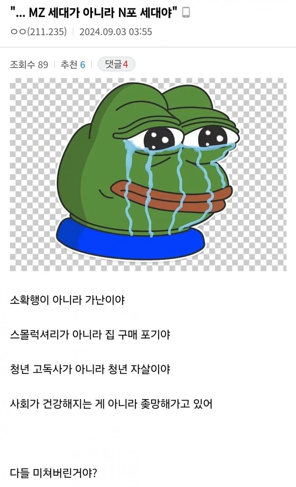

세상이 미쳐돌아가
댓글
모든사람들이 노력하는데 누구는 잘되고 누구는 못되면 노력의 문제가 아니란거잖아...!
노력은 배신하지 않으니까 그 경우엔 노력을 안한 거임. 노력하는 척만 한 거지, 라고 이야기하면 됨.
ㄹㅇ 세상은 공평한데 청년들이 어째선지 계속 개을러져서 청년실업자가 계속 증가하네ㅎㅎ
심지어 중장년층도 점점 개을러지고 있는 모양이야ㄷㄷ
오시이름달고 미친소리하지마라
의외군
계속해서 말장난으로 노예들 자살하고 포기하는거 막아야 기득권이 살거든
반출생주의 ㄱㄱ
어차피 나라에서 인정 안하는거 아니야?
소확행은 좋은데...매사 행복느끼는 성격이라 행복하다
그게 행복은 소소한데 스트레스는 대대하니까 결국 수지 안 맞아서 파산하게 됨.
본인에게 주어진 짐이 많거나 본인 야망이 크거나 하면 그게 더 빠르고
4개만 포기하면 인생이 편해져
스엑스, 연애, 결혼, 수도권 아파트 (지방 아파트
, 수도권 빌라 자가는 가능)
멋진 신세계
원래 단어를 바꿔야 희석되는거지.
피해자 > 피해 호소인 이 대표적인 예
그래서 뭐 어쩌라고
힘들겠지만 어쩌겠냐.
나 말고도 힘든 사람이 있단거에 위로는 느낄수 있겠지만, 계속 저런 생각하면서 피해의식 가지면 결국 본인 손해임.
본인 정신건강을 위해서라도 그냥 내가 할 일 하면서 소소한거에 행복함을 느끼는 삶이 좋다고 생각함
딴데서 '쉬었음' 청년이라고 해서 과연 그걸 '쉬었음'이라고 표현하는 것이 맞는가 한참을 싸우고 비추를 꽤나 수집했었지.
그야... 세상은 공평해서 모든건 사람들이 노력하기 마련인데, 그 사람들이 가난한 건 순전히 그 사람의 문제잖아?
사회는 잘못일리가 없는데 청년 고독사건 청년 자살이건 무슨 상관이며 소확행이건 가난이건 무슨 상관이람 ㅋㅋ